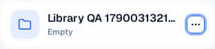

Clarity PR #762
Library mutations own cache invalidation
VERIFIED · PR preview
Preview evidence and independent confirmation for the first paved-path cleanup.
2026-09-22 · 9fcdc4f5e · preview 9974561eaThe tree API now notifies subscribers after every successful write. Callers no longer repeat that work. A blocked session-storage write cannot suppress live updates.
Checks
| Result | Check |
|---|
| Pass | 76 targeted tests. All 11 tree writes notify after success, failed writes do not notify, warmed snapshots refresh, and upload lifecycle ordering remains intact. |
| Pass | Typecheck, lint, editor build, LOC ratchet, security review, and independent Structure review. |
| Pass | Authenticated preview. Create, rename, move, and delete a disposable folder with the dirty-marker storage write blocked. Both Library and sidebar update. |
| Pass | Fresh API reads confirm the move and deletion. Reload confirms persisted UI state. |
| Pass | Independent reviewer exercises create, card and sidebar rename, delete, and reload in the approved QA browser, then audits the automated preview evidence. |
| Warn | Independent browser check saw one Unauthorized toast on sidebar rename. Reload and retry passed. Cause unconfirmed; final automated pass had no tree HTTP errors. |
| Warn | Preview recording uploads are disabled. Brand-color writes, upload completion, and cancellation are covered by focused unit tests; no authenticated upload was attempted. |
| Warn | Existing chunk-size and advisory lint warnings. HomeTreeRoute remains large but shrank. Separate upload completion and Journey Page signals remain intentional. |
Before and after
BeforeSeven contract checks failed. A rename could leave a warmed listing stale. Blocking session storage prevented live change notifications.
AfterThe contract suite passes. Preview UI actions prove both views refresh despite blocked storage. Independent browser checks confirm both views and persistence; an artifact audit checks the discriminating blocked-storage assertions.
The before evidence is a red unit-test run. No screenshot of the old runtime was captured.
Rendered evidence

Preview Library card after rename, cropped to the synthetic test fixture. The long name is truncated in the card. Browser assertions verify the full name in the card and sidebar.
Console and network
The final automated preview run captured 53 real tree API responses with no HTTP errors or uncaught JavaScript exceptions. Create returned 201; rename, move, and delete returned 200. Console messages were not captured by this focused test. Three anonymous smoke checks and both authenticated preview tests passed.
Fixtures created by the Library test were deleted. Four folder records left by a canceled CI attempt were identified by exact IDs and removed from the dedicated preview database; a follow-up read found none remaining. Evidence contains no credentials or customer content.
Candidate and runs
Open the PR preview · Preview verification run
The preview deploys GitHub’s generated merge commit. Its Git tree is identical to PR head 9fcdc4f5e1cfad55acebec4abf394d4a6ee04989. Deploy metadata reports 9974561ea9f973f0cb7f89fc7694c932db2a3f25.
This verifies the PR candidate. The PR has not been merged or deployed to production.